Слева v4, справа v5, одни и те же места страниц. Под каждой парой написано, что изменилось и почему: какие агенты или источники это обосновали. Пометки блоков («01 · Hero») в v5 по умолчанию скрыты: клавиша N или ?notes=1 их включает.
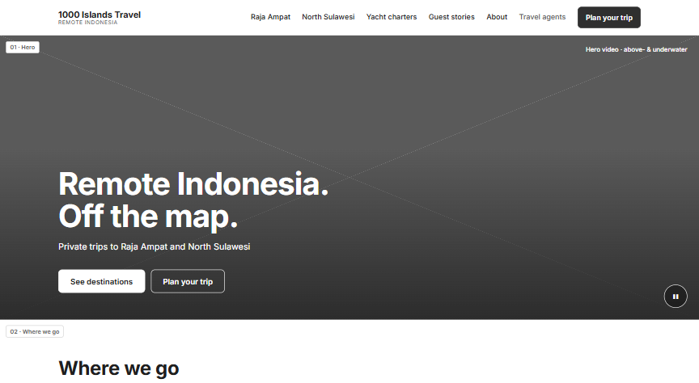
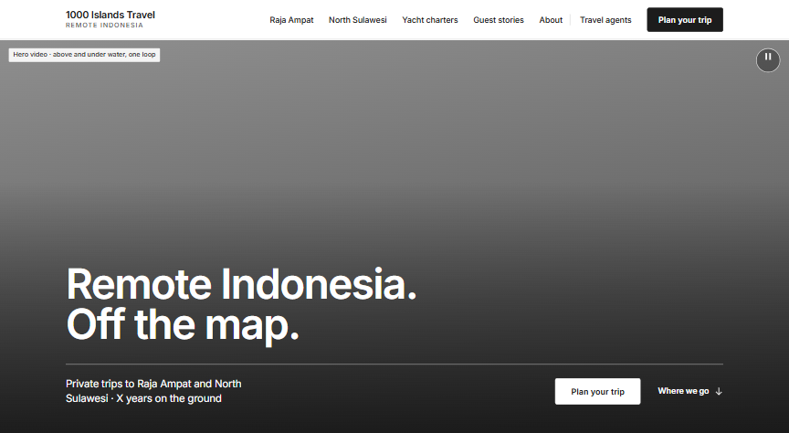
Что: hero на весь экран и заканчивается ровно по краю; одна кнопка и «Where we go ↓»; в подзаголовке место под «X years on the ground». Почему: голый заголовок снизу читался как обрезка (ваше замечание, и так же у A, C, D, E, F); 12 из 15 сайтов ниши делают hero на весь экран, нижний заголовок торчит только у самого устаревшего (C).
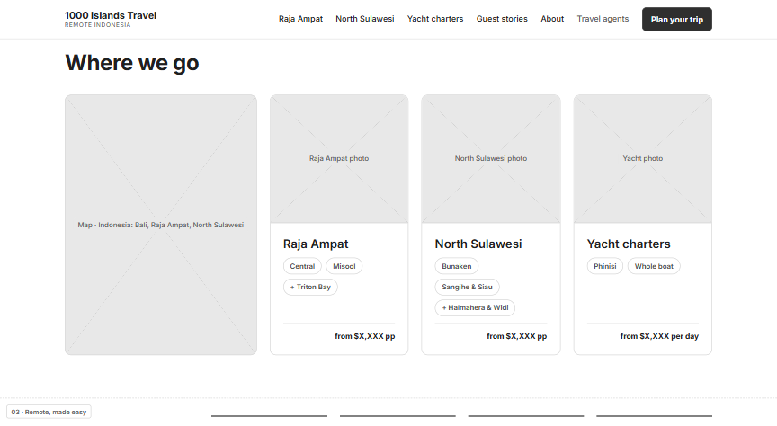
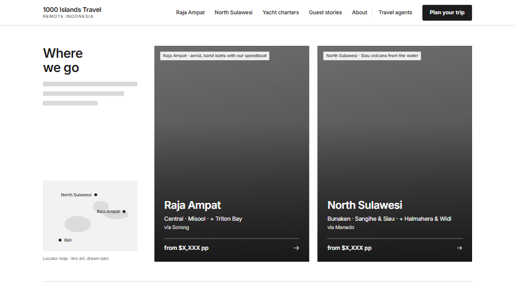
Что: один экран — две высокие фото-панели Раджа-Ампат | Северный Сулавеси, на фото название, районы, «via Sorong / via Manado» и цена; карта стала маленьким локатором; яхты ушли в отдельную тихую полосу ниже. Почему: в v4 серая карта была крупнее самих направлений, фото по 255 px, «пилюли»; на главной карту крупно не показывает никто из 15 (C); яхты — это формат, а не место, и цена за день рядом с ценами на человека пугает (D); «как добраться» снимает главный страх «далеко и сложно» (D, G3).
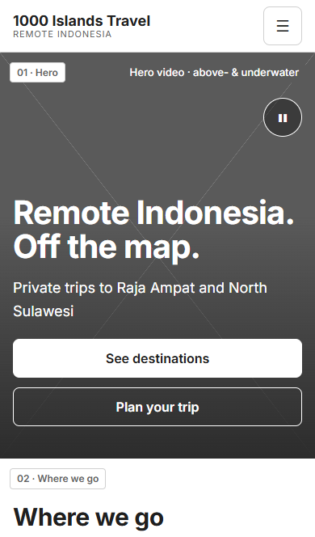
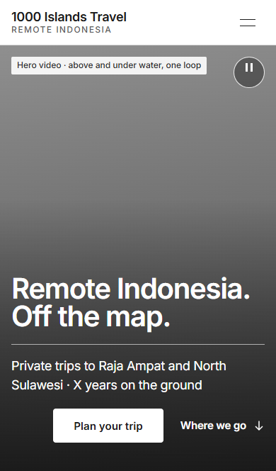
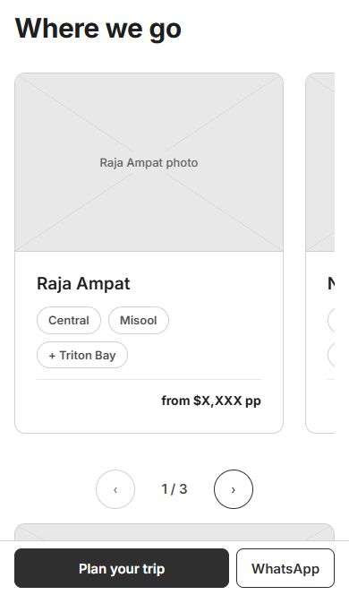
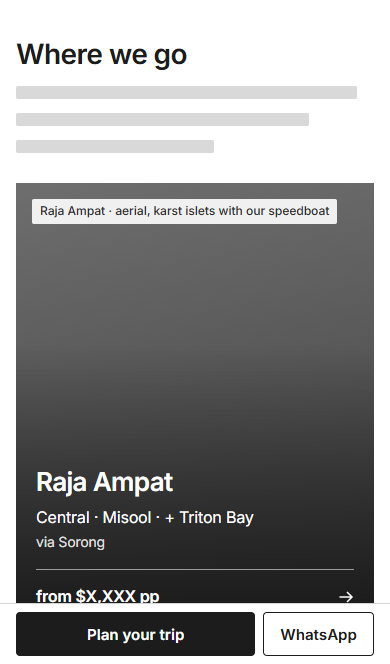
Почему: то, что выбирают и сравнивают, на телефоне ставим стопкой, а не прячем за свайпом (NN/g про мобильные карусели; A, C, D, E).
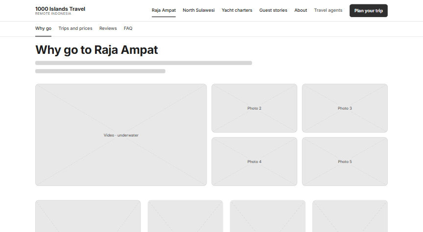
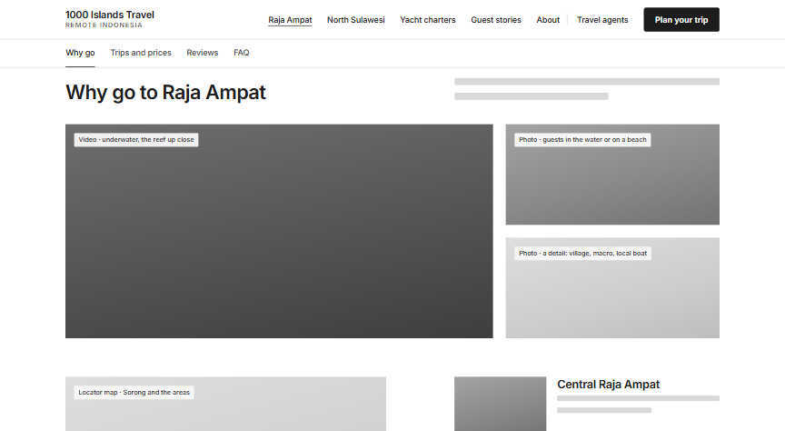
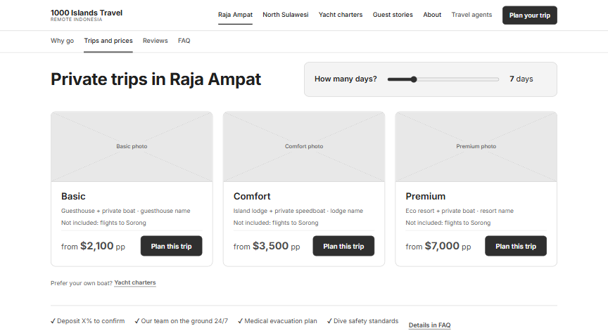
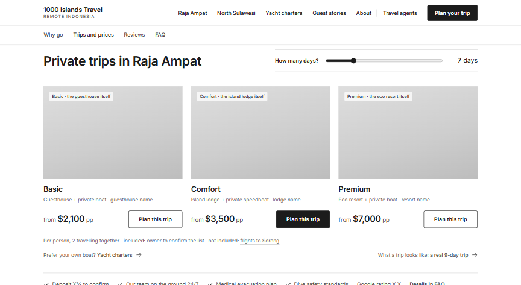
Что сохранено: первый экран (фото + полоса фактов + вкладки), слайдер дней, три уровня, доверие у цены — это канон ниши (C, 4 из 4) и сильная часть v4 (A, D). Что изменилось: галерея 1 большое видео + 2 фото вместо 1 + 4 мелких; районы списком рядом с картой; карточки уровней без рамок, фото 3:2 вместо полос 2,3–2,8:1 (F замерил); строка «за человека, 2 путешественника · что включено · что нет» (D: у цены не было основы); ссылка на реальную 9-дневную поездку.
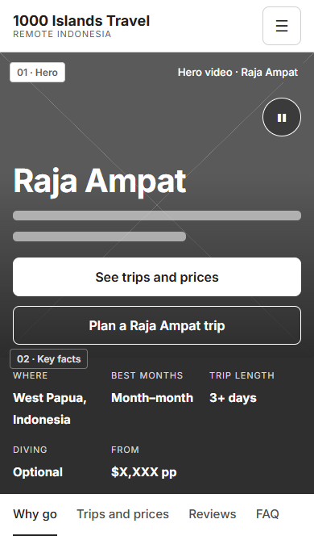
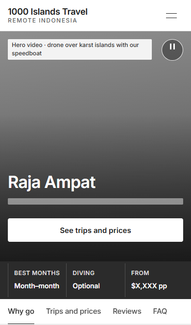
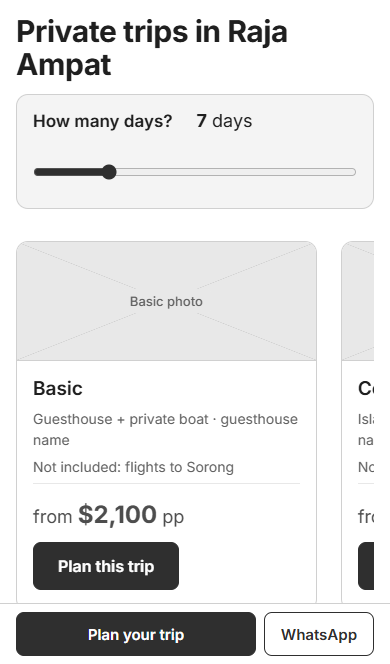
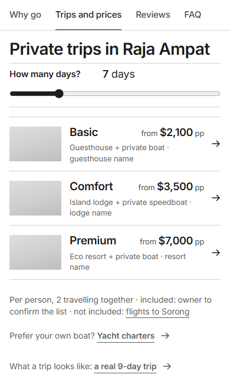
Почему: в v4 на телефоне был виден только Basic, Comfort прятался за свайпом, а слайдер менял одну видимую цену (A, D, E). В hero одна кнопка и три факта вместо двух кнопок и пяти фактов: фото было свободно от текста только на 37% (F, E).
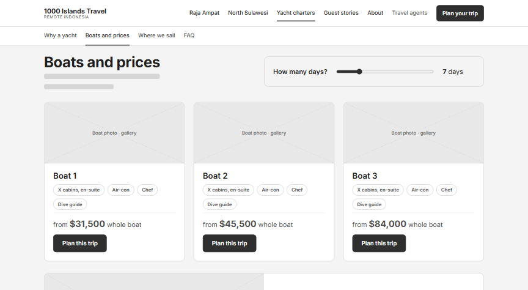
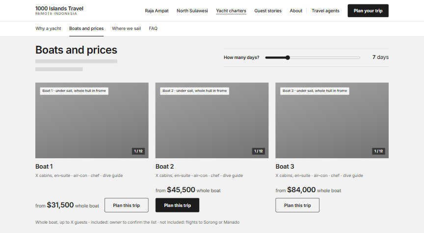
Почему: лодка за $31k+ продавалась через полосу 166 px (F); 12 «пилюль» на странице (B) → одна строка характеристик; счётчик «1 / 12» обещает галерею.
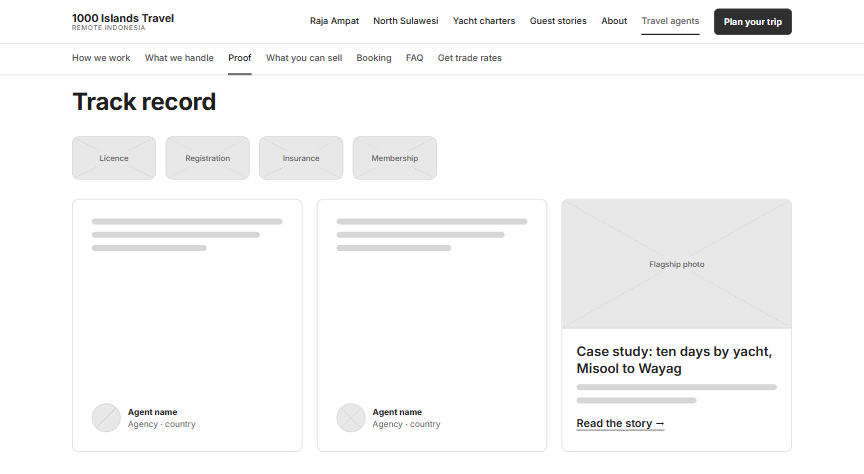
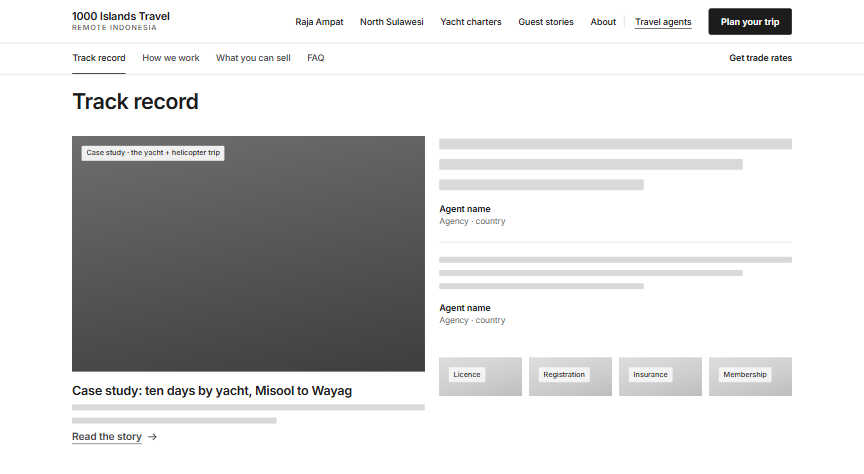
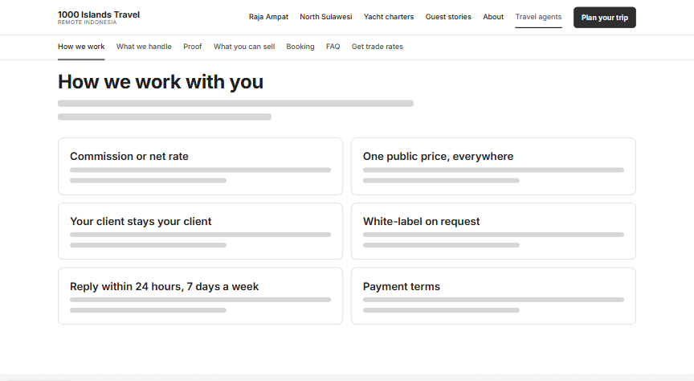
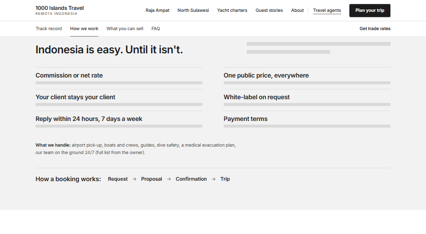
Почему: агент после холодного письма сначала проверяет, настоящая ли компания (D: Stanford Credibility); в v4 лицензии были на 3-м экране после сетки из 6 иконок, которая у нас под запретом (A, B, D, E). Теперь порядок: доказательства → условия → что продавать → FAQ → форма. Кнопку «Download trade kit» убрали: по SITEMAP кит отправляется после регистрации, а не лежит на сайте.
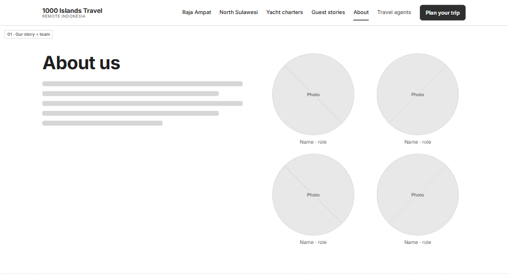
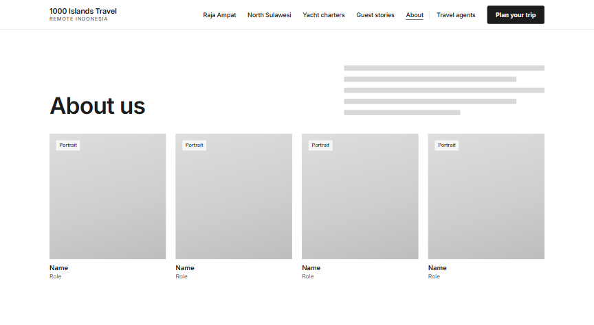
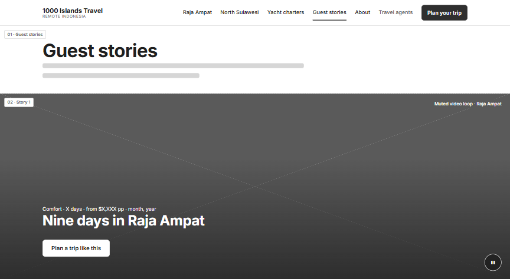
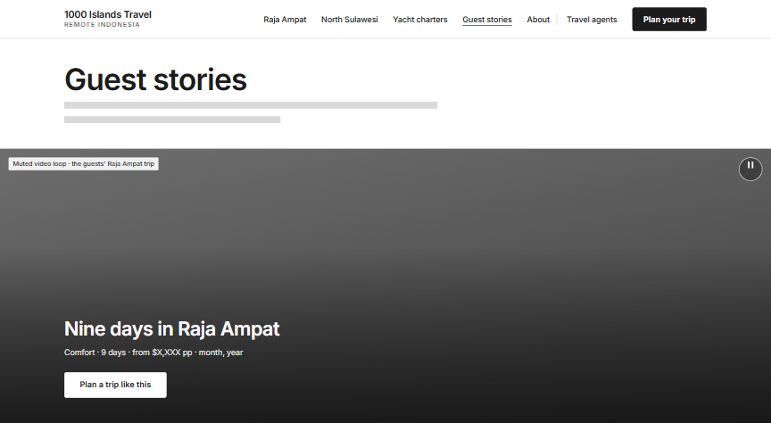
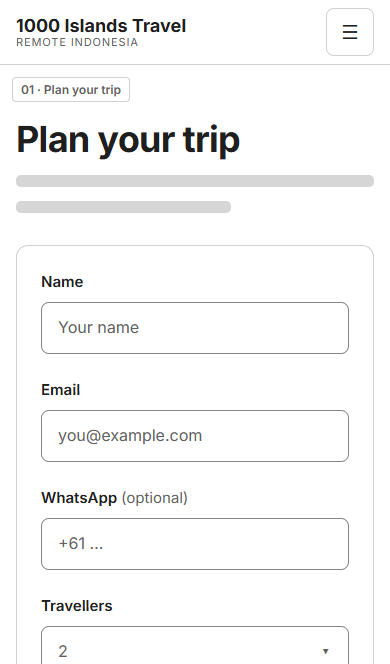
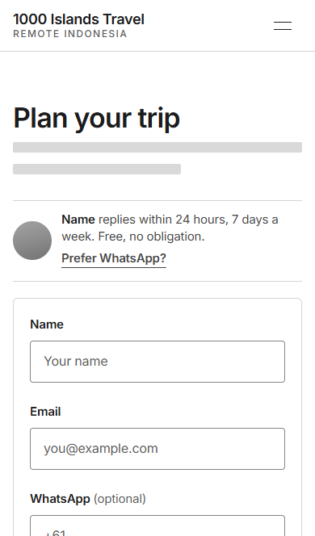
Почему: About — те же блоки, но портреты 4:5 в ряд вместо пустых кружков (A, F). Guest stories почти без изменений: работало. В форме на телефоне успокоение («ответит такой-то за 24 часа, бесплатно») теперь стоит перед полями, а не после кнопки (D, E).
| Страница | Ноутбук 1440×790 | Телефон 390×664 |
|---|---|---|
| Главная | 4.5 → 6.0 | 7.0 → 8.7 |
| Raja Ampat | 5.7 → 5.5 | 8.9 → 7.8 |
| Yacht charters | 6.8 → 6.6 | 9.0 → 7.7 |
| Guest stories | 4.9 → 4.6 | 7.2 → 6.4 |
| About | 4.0 → 3.9 | 5.2 → 5.2 |
| Travel agents | 7.8 → 6.2 | 14.2 → 9.2 |
Главная стала длиннее: hero и направления теперь занимают по целому экрану. Остальные страницы короче.